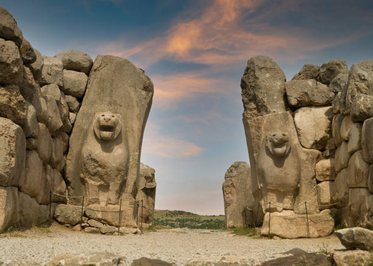

Çorum Hakkında
Çorum, Hattuşaş gibi önemli tarihi alanlara ev sahipliği yapmasının yanı sıra, leblebisiyle de ünlüdür. Antik Hitit medeniyetinin merkezi olarak tarihsel önemi büyüktür.
Ziyaret Edilmesi Gereken Yerler:
- Hattuşaş Antik Kenti: Hitit İmparatorluğu'nun başkenti olan bu antik kent, UNESCO Dünya Mirası Listesi'nde yer almaktadır.
- Yazılıkaya Açık Hava Tapınağı: Hititler dönemine ait kaya oymaları ve tapınak kalıntıları bulunan etkileyici bir alan.
- Alacahöyük: Hititler'e ait önemli kalıntıların yer aldığı, tarihi bir höyüktür.